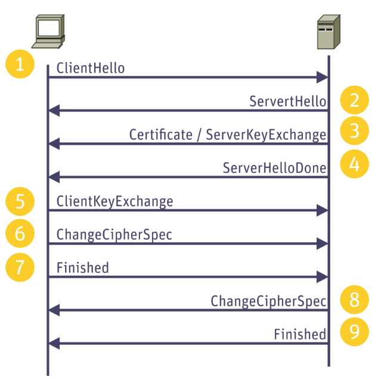
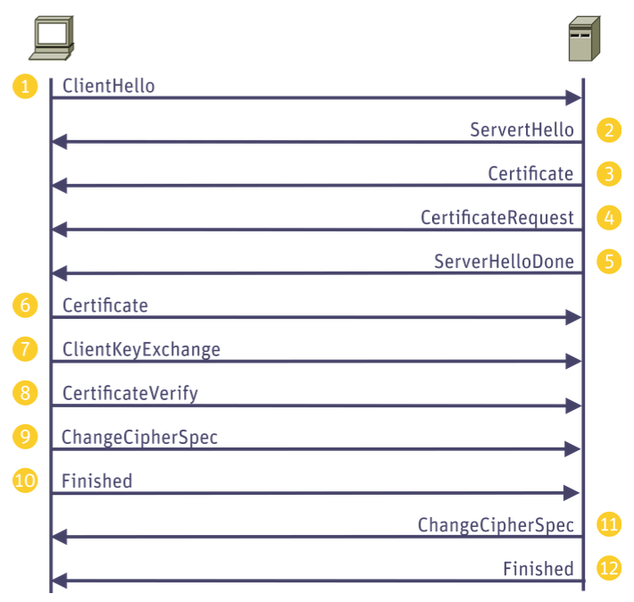
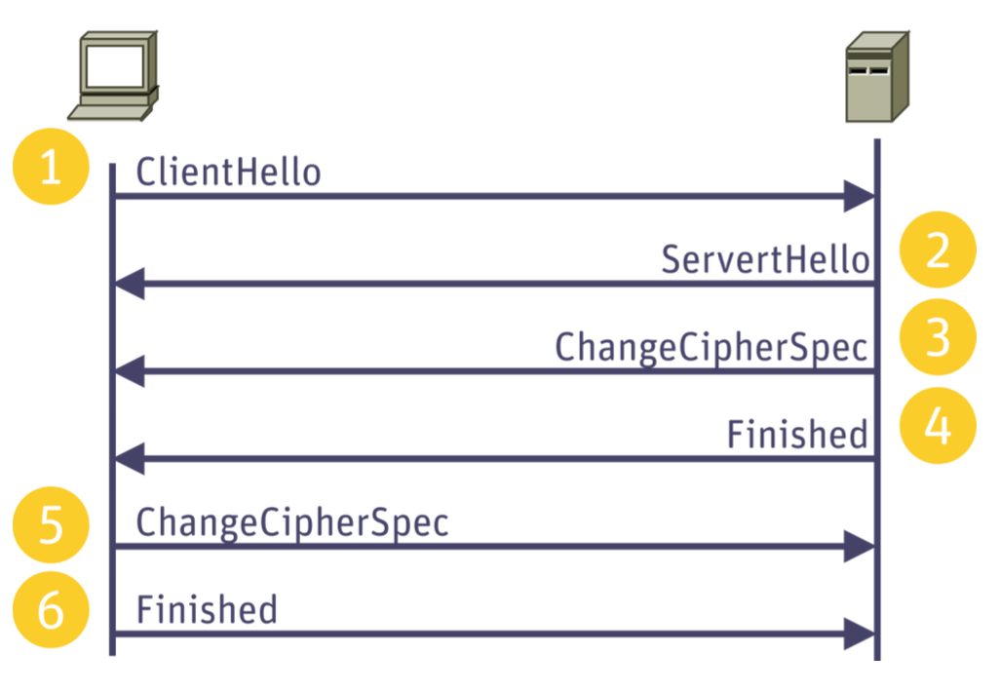

tags: security-protocol tls
TLS Protocol Details
links: SPA TOC - TLS - Index
Goals
- Confidentiality (privacy)
- Integrity
- Authentication
Usage of TLS
- HTTPS
- LDAPS
- FTPS
- DNS over TLS
- IMAPS, POP3S, SMTPS
- OpenVPN
- DTLS (TLS over UDP)
Opportunistic TLS
Opportunistic TLS refers to extensions, which allows to upgrade a plain text connection to an encrypted TLS connection. But Opportunistic TLS is vulnerable to man-in-the-middle STRIPTLS attack (the attacker sending back a message claiming that TLS is unavailable).
HTTPS best practice
- Always use TLS (implicit TLS)
- Redirect port 80 to 443
- Set the
Strict-Transport-Securityheader
Handshake (TLS 1.2)
Establish a channel for encrypted communication. The Illustrated TLS 1.2 Connection

1 ClientHello
The session begins with the client saying “Hello”. The client provides the following:
- protocol version
- client random data (used later in the handshake)
- an optional session id to resume
- a list of cipher suites
- a list of compression methods
- a list of extensions
2 ServerHello
The server says “Hello” back. The server provides the following:
- the selected protocol version
- server random data (used later in the handshake)
- the session id
- the selected cipher suite
- the selected compression method
- a list of extensions
3.1 Certificate
The server provides a certificate containing the following:
- the hostname of the server
- the public key used by this server
- proof from a trusted third party that the owner of this hostname holds the private key for this public key
3.2 ServerKeyExchange
The server calculates a private/public keypair for key exchange.
The server provides information for key exchange. As part of the key exchange process both the server and the client will have a keypair of public and private keys, and will send the other party their public key. The shared encryption key will then be generated using a combination of each party’s private key and the other party’s public key.
The parties have agreed on a cipher suite using ECDHE, meaning the keypairs will be based on a selected Elliptic Curve, Diffie-Hellman will be used, and the keypairs are Ephemeral (generated for each connection) rather than using the public/private key from the certificate.
4 ServerHelloDone
The server indicates it’s finished with its half of the handshake.
5 ClientKeyExchange
The client calculates a private/public keypair for key exchange.
The client provides information for key exchange. (public key)
6 ChangeCipherSpec (Client)
The client now has the information to calculate the encryption keys that will be used by each side. It uses the following information in this calculation:
- server random (from Server Hello)
- client random (from Client Hello)
- server public key (from Server Key Exchange)
- client private key (from Client Key Generation)
The client indicates that it has calculated the shared encryption keys and that all following messages from the client will be encrypted with the client write key.
7 Finished (Client)
To verify that the handshake was successful and not tampered with, the client calculates verification data and encrypts it with the client write key.
The verification data is built from a hash of all handshake messages and verifies the integrity of the handshake process.
8 ChangeCipherSpec (Server)
The server indicates that it has calculated the shared encryption keys and that all following messages from the server will be encrypted with the server write key.
9 Finished (Server)
To verify that the handshake was successful and not tampered with, the server calculates verification data and encrypts it with the server write key.
The verification data is built from a hash of all handshake messages and verifies the integrity of the handshake process.
Handshake (TLS 1.3)
Establish a channel for encrypted communication. The Illustrated TLS 1.3 Connection
Demo: See this page fetch itself, byte by byte, over TLS
The ClientHello contains only a short list of supported AEAD symmetric cipher suites. The client will send a list of supported key exchange groups. The client also shares its public keys. This way, the server will be able to compute the shared secret key no mater what algorithm it chooses.
ServerHello, ChangeCipherSpec messages are plain. However, all succeeding messages EncryptedExtensions, Certificate, CertificateVerify, Finish are already encrypted.
The ChangeCipherSpec messages is the last plain text message of the client. The Finish message is already encrypted.
| What’s new | TLS 1.3 | TLS 1.2 |
|---|---|---|
| Safer key exchange | (EC)DHE → forward secrecy | RSA, (EC)DH, (EC)DHE |
| Faster handshake | 1-RTT, 0-RTT (resumption) | 2-RTT |
| More secure symmetric encryption | Must be AEAD | AEAD, CBC, RC4, 3DES |
| Simple cipher suites | AES_256_GCM_SHA384 | ECDHE-ECDSA-AES128-GCM-SHA256 |
| Stronger signature | Sign the entire handshake | Only cover part of the handshake |
| Better EC algorithm | EdDSA (Ed25519, Ed448) | ECDSA (P-256, P-384) |
See some images here.
TLS Mutual Authentication (mTLS)
The TLS protocol allows also to authenticate the client identity. New are the 3 messages: CertificateRequest, Certificate from the client and CertificateVerify.

TLS Resume Session
With a valid sessionID a session can be reused. Only 1 round trip needed in that case. TLS 1.3 has the 0-RTT case.

TLS Key Generation
Let’s go through the key generation and the terminology there. In your browser you see a string like this one to indicate which ciphers are used in TLS: TLS_ECDHE_RSA_WITH_AES_128_CBC_SHA256 In TLS 1.3 this is shorter: TLS_AES_256_GCM_SHA384
Here we see that ECDHE is used for the initial key exchange. To verify the certificate signatures RSA is used. Based on a derived key from the exchanged key we will use AES_128_CBC for encryption and SHA256 is used for MACs / hashing stuff.
Forward Secrecy: Both TLS 1.2 (when using ephemeral key exchanges) and TLS 1.3 achieve forward secrecy. Even if the long-term keys are compromised, the session keys cannot be recreated, protecting past sessions from being decrypted.
TLS 1.2
Premaster Secret: At the beginning of a TLS handshake, the client and server agree on a premaster secret. In RSA key exchange, this is encrypted with the server’s public key and sent to the server, which decrypts it with its private key. In Diffie-Hellman (DH) or Elliptic Curve Diffie-Hellman (ECDH), both sides contribute to generating the pre-master secret without it being transmitted over the network.
Master Secret: Both client and server then use the premaster secret to generate the master secret. Always 48 bytes. This is done by combining the premaster secret with both the client and server’s random values (nonces) generated at the beginning of the handshake. A pseudo-random function (PRF) is applied to create the master secret.
Session Keys: The master secret is then used as the seed for another PRF to generate the session keys. This typically includes separate keys for encryption and MAC (Message Authentication Code) for both the client and the server:
- Client write MAC key
- Server write MAC key
- Client write encryption key
- Server write encryption key
- IV keys for both by some ciphers
Key Block: The result of this process is a block of data from which the session keys are derived. For block ciphers, initialization vectors (IVs) are also derived from this block.
TLS 1.3
- Key Exchange: During the handshake, the client and server agree on a shared secret using Diffie-Hellman key exchange (either finite field DH or ECDH). This value is never transmitted over the network.
- Derived Secrets: TLS 1.3 uses a series of derived secrets from the shared secret. It uses the HKDF (HMAC-based Key Derivation Function) to derive multiple keys and IVs needed for different stages of the handshake and for application data encryption.
- Handshake Keys: Initially, handshake keys are generated to encrypt the remainder of the handshake messages.
- Master Secret: After the handshake, the master secret is derived from the shared secret using HKDF, along with the handshake transcript hash, ensuring that the keys depend on all the data exchanged during the handshake.
- Session Keys: Finally, session keys are derived from the master secret to encrypt the application data.
JA3
The ClientHello it is a great source for fingerprinting the client (actually the SSL/TLS stack).
- It identifies a client on the network/transport layer (pcap), even so all traffic is encrypted.
- Hard to fake, therefore pretty reliable in contrast to a UserAgent header field.
- It combines a lot of information, therefore quite unique.
This fingerprint includes the TLS version, accepted cipher suites, list of extensions, elliptic curves, and elliptic curve point formats.
TLS Decryption in Wireshark
This is different for TLS 1.2 and TLS 1.3
- If TLS < 1.3 and RSA is used you can provide the RSA private key of the server.
- If TLS < 1.3 and (EC)DHE is used you must provide the premaster secret. (Wireshark can then calculate the master secret with this secret + the plain text nonce’s of both parties)
- With TLS 1.3 and (EC)DHE you need to use the
SSLKEYLOGFILEenv variable to log those values
Record Protocol
The Record Protocol takes messages to be transmitted, fragments the data into manageable blocks, optionally compresses the data, applies a MAC, encrypts, and transmits the result. The TLS default is MAC-then-encrypt i.e. the whole BLOB is encrypted. Due to a number of security vulnerabilities RFC 7366 proposes the encrypt-then-MAC security mechanism.
TLS Vulnerabilities
- Downgrade attacks such as
- FREAK (Downgrade to small RSA key with 512bit)
- Logjam (Downgrade to small DH keys with 512bit)
- Poodle (Padding Oracle On DOwngradeD Legacy Encryption)
- Beast (Violate same origin policy constraints, for a long-known cipher block chaining (CBC) vulnerability in TLS 1.0)
- Crime (Compression Ratio Info-leak Made Easy. Compression leaks data)
- Breach (Built on Crime)
- Vulnerabilities in implementations (Heartbleed)
- Padding Oracle Attack
links: SPA TOC - TLS - Index